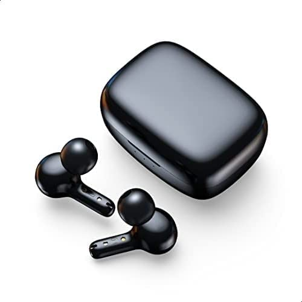

تاكيد الشراء

سماعات اذن لاسلكية ايربودز ترو من تشوتيك ترو/صوت باس جهوري مع 4
ميكروفونات/مكالمات واضحة مع تقليل ضوضاء تلقائي/مقاومة للماء
IPX8/حساسية التحكم باللمس/مريحة في الارتداء/بلوتوث 5.2/حجم صغير+حافظة
هدية
- العلامة التجارية : شويتيك
- اسم الطراز : تشويتيك تي اي اس
- اللون : اسود
- عامل شكل سماعات الرأس : في الاذن
- تقنية الاتصال : لاسلكي
- الكمية : 200
- السعر : 1,199جنية
تاكيد